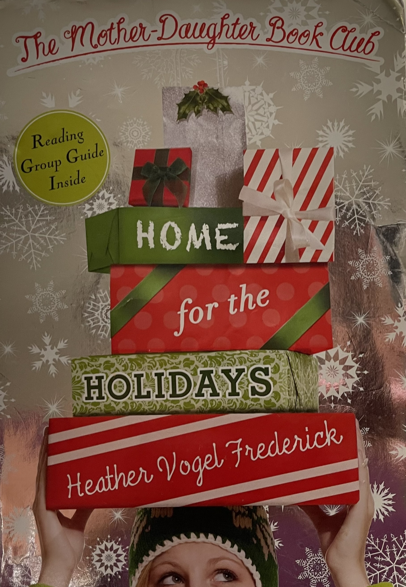

I absolutely adore this book series and it's one of the first book series that I ever read and finished. I remember reading these books back in elementary schools and they taught me a lot about classical literature, friendship, family, and even how to problem solve friendship or family issues. The books provided a way for me to observe how the main characters of these books grew up and dealt with problems that I would face later on in life. I followed these characters from their middle school years all the way up until they were going off to college. After avidly reading each book, I felt like these characters were my friends and that we were kindred spirits. This book series is also about a book club and the series featured several classical stories such as Little Women by Louisa May Alcott and Anne of Green Gables by Lucy Maud Montgomery. I've been on a reading streak since I've read these books and this series and this author will always have a special place on my bookshelf.
This series features 7 books that follow the 5 main characters: Megan, Cassidy, Emma, Jess, and Becca. The series takes place in Concord, Massachusetts and picks up when the girls are in their first year of middle school. Initally Megan and Becca bully Emma and Jess terribly, while Cassidy had just moved to Massachusetts after the passing of her father. The girls are brought together by the book club that their mother's organize and the rest is history. Each book has a focus on one classical book that the characters read and have discussions about, which can add a fun element to the story if you choose to read along. However, the books aren't just about reading, they also show the girls as they bond over boys, fashion, sports, and ice cream from Kimball's and when the girls fight and give each other the silent treatment, but the girls always come back together in the end. This series is the ultimate tale of a love for reading, friendship, and family. It's a story that every little girl will love.
"There is hope in the word maybe. Maybe. Such a tiny word. Such a powerful word." - Heather Vogel Frederick, Much Ado About Anne
| Book 1 | Rating: 6/10 | I liked this book, but thought that it was kind of boring just because the author had to do all of the story setting. We had to be introduced to all of the characters and the setting. I did like the author's use of drama because it didn't feel unneccessary and instead it seemed like all of the drama was used to push the plot of the story along. I was happy to see that Megan had some character develpment and it was kind of cool to see observe the way the girls were brought together through their parents forcing them to read a book. I love that this book illustrated how reading brings people together. | |
|---|---|---|---|
| Book 2 | Rating: 7/10 | So much drama! I mean I'm not complaining, I loved every minute of it, but some of the drama had me ready to pull my hair out. In this book Cassidy is introduced to her new stepfather and she does not like him. At all. I think that fact alone made this book interesting because Cassidy was still clearly dealing with the death of her Dad and wasn't ready for her mom to get remarried. I liked how the author really looked through the lens of a 7th grader to write Cassidy's perspective. It felt so real. Looking back though, I don't reread this book often, just because Cassidy was so horrible to her mother and stepfather, but you know what I get it. | |
| Book 3 | Rating: 7/10 | I actually really liked this book. I thought it was interesting how the girls had pen pals with another Mother Daughter Book Club in Wyoming and then later on in the book go stay at their ranch. It was really cool to think that there was another group of girls who were also in a book club with their moms and it left me wondering, why isn't there one in North Carolina? It was also interesting that some of the girls had almost parallel personalities. I liked the book, because there wasn't a lot of superfluous drama to me and I just really liked how each of the girls' personalities shined in this book. Maybe I should get a pen pal! | |
| Book 4 | Rating:10/10 | Probably my favorite book in the entire series and I've read the book Pride and Prejudice, so I was able to go into this book with some prior knowledge. The story started off really interesting for me because Emma and her family moved to live in England for a year. I loved that I got to see Emma's point of view living in England, because I want live in England one day or at least visit. It was also so sweet how the girls all banned together to buy Emma a plane ticket back home for spring break with a pie business (hence the name of the book). It actually has inspired me to start my own business! I really liked how all of the characters had a unique role in this story. Emma moved to England, Megan started her fashion blog, Cassidy was forced to ice skate with her new British partner, Jess fosters a fox, and Becca really begins to come into herself. This was a great book and I have reread it over and over again. | |
| Book 5 |  | Rating: 9/10 | I actually really liked this book. In this book the girls have a gift exchange, but when Jessica's little brothers mess with the gifts a whole lot of drama unfolds. The story takes place during the holidays and features hot cocoa, a cruise ship, Zach Norton dressed up as Santa Claus, ice skating, a broken leg, and lots of drama. This was a greate holiday read to curl up on the couch in my living room next to the fireplace. I actually got the idea to a gift exchange with my friends from reading this book. The only reason that this book was less than a 10 is becuase it was a little painful to watch all of the drama unfold and a lot of it was due to a pair of sneaky twins *sigh*. However, the drama was entertaining and kept me engaged. |
| Book 6 | Rating: 8/10 | I rated this book so high, not necessarily because I liked it, but also because it was entertaining. So much happens in this book, but a lot of it is focused on Megan. In this book she goes to France with Gigi, her grandmother and tours Paris while also seeing her clothing collection in a local boutique. This was quite honestly one of my favorite chapters to read. Along the way Gigi meets someone and gets engaged, problem is that he has a granddaughter named Sophie who ends up moving in with Megan. All the girls immediately dislike her and that was the start of a whole ton of drama. Reading the book was honestly a challenging for me just because the girls are supposed to be in their Junior or Senior year of highschool and didn't even give Sophie the benefit of the doubt. I felt bad for Sophie a good majority of the book, but I also like how the author articulated each of the character's points of view because I fully understood why they treated Sophie the way they did. | |
| Book 7 | Rating:5/10 | I did like this book, but I was expecting a bit more from it, I think. For me this book is the end of an era, the girls were all getting ready to go off to college and the Mother Daughter Book Club would be no more. I wanted something that was going to be the ultimate conclusion to this wonderful series, but instead it was just the girls at summer camp as counselors with the same drama they had been having the past few books in the series. I do like how over the course of the books you can see the girls maturing, but I would have rather read about the girls adjusting to college, given that they are all splitting up rather than their summer with kids and drama. Overall the book was enjoyable and it is kind of the perfect summer beach read, but I don't think I would read it again and I would love something that makes the series feel more complete. |
You can learn more about her books by visiting her website at the link here.
Contact Heather and share your thoughts with her about these books at the link here.
Email: highschooljunior@email.com
Phone: 123-456-7890